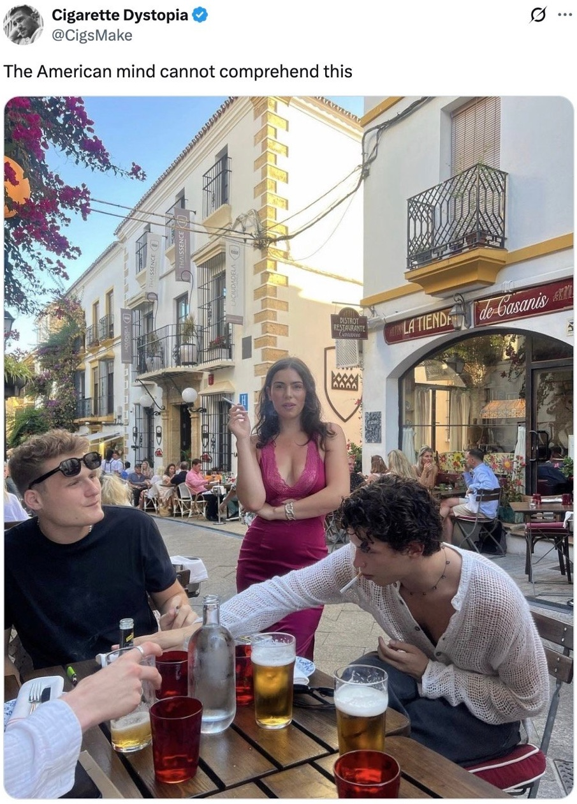

French Riviera (Nice and Antibes) trip report from 23 August - 01 September 2025.
And a movie. And a paradise. All combined into one magnificent city-state that screams wealth and exclusivity from all its nooks and crannies while still welcoming every tourist that walks its streets with open arms and a whisper of "you'll never be one of us, but you can pretend for the day".
Hundreds of yachts—tens of megayachts—line the harbors; supercars are posted up in front of the [very well known] Monte Carlo casino; brunch buffet spots cost upwards of 95 € per person; attractive women walk their pampered Pomeranians; ultra high-end clothing stores are littered throughout the city. There is no escaping the constant message of wealth here. Heck, the place was built on it and is why people come!
Every French person I have interacted with across three different cities—Paris, Lyon, and now Nice—has been quite pleasant, if not neutral. That was until we met Bob. Bob isn't just the stereotypical rude Frenchman who believes his culture is simply and utterly superior to yours, he's a flat-out dick!
Travel partner (TP1) and I booked a day trip to Verdon Gorge through Get Your Guide. Our lucky selves got Bob. Bob picked us up at 8:15am sharp, as promised. What he did not promise, and neglected to mention altogether, was that he was in a real-life game of Speed, where if his van wasn't going faster than 50 kmh through the narrow streets of Nice he would get blown up and his family get gruesomely murdered. The murder parts are obviously fake, but good god this man was driving fast! 50 kmh easy on straightaways. Turns weren't that much slower.
At the next stop Bob got out to frantically look for the next guests and robotically asked us "how's everything". I responded in a friendly manner with "good, but you're driving a little fast!" to which another guest, Charles, said "yeah man, you don't need to drive that fast through the city". This initiated the beratement:
I knew you [Charles] would cry about it [the fast driving]
I can go 50 kmh through the streets if I want to! You want to take all day? You want to take 5 hours to get the Gorge?
It feels fast because of gravity. You know what gravity is?
Aaaaaaaand we're out. TP1 and I said hell naw and got out of the car before something bad happened. We never heard back, but did get a refund!
My trust in reviews is now further eroded. We glanced through the option we booked and there were multiple reviews saying how awesome Bob was???
There are two forces at work that push the Rivieran cyclist to be fit.
First, the climbs. The climbs are everywhere and of all different levels (in a sense...). Sure, someone could ride on the bike path that lines the beach from Nice to Antibes, but that gets boring quickly, forcing riders to go further inland and meet their maker. Multiple famous climbs are in the Nice area—Col d'Eze, Col de Vence—but there are just as many unnamed routes that offer similar challenge and views. The "all different levels" mostly refers to the length of climb. Of course, riders can always bail by just turning around after they've gotten their dose for the session. What's more sinister are the grades that exist. "Minimum power" refers to the lowest amount of power required to get from point A to point B. For example, going 5-7 mph (a pretty slow range) on a 10% grade requires 210-300 W of power, which is no joke for the recreational cyclist!
Second, the views. I'm sure that my landlocked ass was oogling and oggling way more than the locals do since they see the beauty of their land every day, but gahdayuuuuuuuum everywhere you look is gorgeous scenery and views. I rode along the beach, cresting a hill and turning a bend to see the sunrise waking up the Niceizens; I rode through beautiful pine forests and on the pine-needle-covered road; I rode along the coast between Nice and Monaco through pristine towns; I rode in the foothills above Monaco, able to see the city nestled into its cove while overlooking the Mediterranean.; I rode down steeps hills in nice neighborhoods with the sun shining and an uninterrupted view for miles. The examples are just as endless as the views. I felt the need to ride more to fill my eyes with more of the beauty all around me.
Some other cycling notes:
There was a joke going around Twitter a few months ago that started with this tweet:

Take the original intent how you will. It then progressed into saying how Americans often go to Europe to party and hang out when they could do the same thing at home and for much cheaper, but because it's in Europe it makes it so much better. I think there's something to this for most of travel, but especially Europe (at least in some of my circles).
What all did we do in France? Walked around to look at historical places and things, ate, rode, hung out at a beach club, hung out at the villa, hung out on a catamaran, etc. A lot of these can be done in the States for similar prices, except I don't have to buy an $1100 plane ticket.
What's my point here? It's not to trash people who want to go to Europe; it's to encourage you and me and our respective friends to question if they are going to X because it's X or because X offers something they can't get elsewhere. (And just to be extra clear, wanting to go to X because it's X can be totally fine!)
There must be a phrase for when an entity's (restaurant, lodging, etc) purpose is X, but because they have Y people are willing to look past the fact that the X rating is shit. Two examples from the trip:
It felt like the Riviera was a lot of this. They know that people are coming for the clout, for the Instagramming, for the views, and don't care that much about how good things actually are. I mean if you went to France for the food, you'd go to Lyon, right?
So my lesson has been learned: if I want a good location, go to the good location; if I want good X, don't go to the good location; if I want both, prepare to pay.
Cigarettes are still prominent.
People don't dress that nice.
There are a lot of immigrants.
There are a lot of tourists.